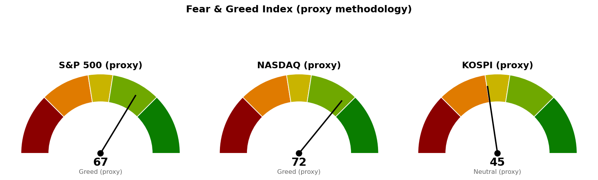

| 직전에 건 조건 | 판정 | 근거 |
|---|---|---|
| 나스닥 기준선 26,951 (종가 상회) | 충족 | 9/25 종가 27,069 |
| 나스닥 도착지 27,159 (고가 도달) | 미충족 · 진행 중 | 9/25 고가 27,123으로 36포인트 못 미쳤습니다 |
| 나스닥 다음 지지·사다리 1차 26,680 | 미충족 · 집행 없음 | 9/25 저가 26,876 |
| S&P 500 기준선 7,794 (종가 상회) | 미충족 · 진행 중 | 9/25 종가 7,743 (+0.51%) |
| S&P 500 다음 지지·사다리 1차 7,653 | 미충족 · 집행 없음 | 9/25 저가 7,693 |
| 코스피 기준선 7,054 (종가로 지킴) | 진행 중 · 장중 이탈 | 9/28 시가 7,058에서 밀려 12시 6,911, 저가 6,903. 판정은 오늘 종가입니다 |
| 코스피 도착지 7,199 (고가 도달) | 미충족 | 9/28 고가 7,066 |
| 30년 금리 5.286% 아래 (종가) | 미충족 | 9/25 종가 5.504% |
"못 지키면 어디까지"는 이번에도 시험받지 않았습니다. 미국 두 지수는 다음 지지 위에서 마쳤고, 코스피는 6,830까지 81포인트(하루 평균 변동폭의 0.37배)를 남겨 두고 있습니다.
세 계획 모두 살아 있습니다. 옮긴 가격은 둘입니다. ① 나스닥 기준선을 26,951에서 27,159로 올렸습니다 — 26,951은 조건을 채웠으므로 다음 확인 가격인 90일 박스 상단으로 넘어갑니다. ② 코스피 사다리 1차를 6,702에서 6,673으로 내렸습니다 — 근거였던 일봉 61.8% 되돌림선 6,702가 이번 산출에서 사라졌습니다. 일봉 되돌림이 6월 19일 고점 9,386 → 7월 29일 저점 5,263 구간으로 다시 그어졌기 때문이며, 6,673은 주봉 38.2% 되돌림선과 8월 5일 고점 6,675가 겹치는 자리입니다. 나머지 가격은 직전과 같습니다.
직전 브리핑의 오류를 정정합니다. 9월 24일·25일 코스피 봉을 "자료에 없는 결측"으로 적었으나, 그 이틀은 추석 연휴로 한국 거래소가 쉰 날입니다. 오늘 코스피의 전일 종가가 9월 23일 종가 7,081로 잡히는 것도 같은 이유입니다.
기준선까지는 한 세션 안에 닿는 거리입니다. 27,159를 종가로 넘으면 6월 1일 고점 27,190 위로는 받치거나 막을 가격 근거가 없어 도착지를 적지 않습니다. 기준선을 넘지 못하고 26,951을 종가로 내주면 9월 23일에 이은 반납이며, 그때 볼 가격은 26,680입니다.
기준선까지는 한 세션 안에 닿는 거리입니다. 90일 박스는 7,282~7,798이고 박스 안쪽은 매집·분산 어느 쪽 우위로도 판정되지 않았습니다(지지 시험 때마다 매도 거래량 증가 · 저점 절상).
오늘 장중에 6,996~7,054 구간(7회 반응한 가격)을 아래로 뚫었고, 이 구간이 지지에서 저항으로 바뀐 자리로 판정됩니다. 20일선(6,859)이 50일선(6,892) 아래에 있어 두 이평이 정배열이 아닙니다. 사다리 두 회차는 22포인트(하루 평균 변동폭의 0.10배) 떨어져 있어 같은 날 함께 체결될 가능성이 큽니다. 6,830과 6,673 사이 157포인트(0.72배)에는 받칠 가격이 없습니다.
코스피는 미국 두 지수가 금요일 상승 마감한 뒤 열린 세션에서 반대로 -2.40% 밀리고 있어, 세 지수의 방향이 갈렸습니다. 코스피의 다음 시가는 오늘 밤 뉴욕 마감이 먼저 정하므로 코스피 단독 신호로 결론을 앞당기지 마십시오.
세 지수 회차를 전부 집행하면 계좌의 16%(22,319,744원)가 지수 노출로 들어가고, 세 지수가 모두 취소선에서 정리되는 경우 계좌 대비 -0.23%(-318,663원)입니다. 갭으로 취소선을 건너뛰고 열리면 실제 손실은 이보다 커집니다.
| 지수 | 값 | 등락 | 고가 | 저가 |
|---|---|---|---|---|
| S&P 500 (9/25 종가) | 7,743 | +0.51% | 7,752 | 7,693 |
| 나스닥 종합 (9/25 종가) | 27,069 | +0.48% | 27,123 | 26,876 |
| 코스피 (9/28 12시 장중) | 6,911 | -2.40% | 7,066 | 6,903 |
| 니케이 225 (9/28 장중) | 66,334 | -0.05% | 67,035 | 66,302 |
20일 초과수익이 플러스인 미국 업종은 기술·커뮤니케이션 둘로 줄었습니다.
한국 섹터는 테마형 ETF 기준이라 미국 업종 ETF와 성격이 다르며, 오늘 값은 장중입니다. 지수가 -2.40%인 날 반도체만 지수와 비슷하게 밀렸고(1일 -0.11) 나머지 열 개 섹터 중 여덟은 지수보다 2~6%포인트 덜 빠지거나 올라, 오늘 하락은 반도체 비중이 큰 지수 구성에서 나온 것입니다. AI전력기기는 20일 초과수익이 +3.45에서 -5.25로 내려 주도 축에서 빠졌고, 계좌의 AI전력 테마 14.47%가 여기에 걸려 있습니다. 이번 브리핑에서는 종목 발굴을 돌리지 않았으므로 후보를 인용하지 않습니다.
| 항목 | 값 | 직전 대비 |
|---|---|---|
| 미국 경기선행지수 (2026년 8월) | 100.96 | 7월 100.89 대비 +0.06 · 직전 브리핑과 같은 값 |
| 한국 경기선행지수 (2026년 8월) | 102.87 | 7월 102.81 대비 +0.06 · 직전 브리핑과 같은 값 |
| 미 10년 명목금리 | 5.18% (9/24 확정) · 9/25 종가 지수 시세 5.184% | 확정치 9/23 5.11% 대비 +0.07%포인트 |
| 미 10년 기대물가 | 2.34% (9/25) | 9/24 2.33% 대비 +0.01%포인트 |
| 미 10년 실질금리 | 2.85% (9/24) | 9/23 2.76% 대비 +0.09%포인트 |
| 유가 (WTI) | 확정치 96.41달러 (9/22) · 최신 93.50달러 (9/27 선물) | 선물 +1.18% |
| 달러지수 (광의) | 119.51 (9/18) | 9/17 119.35 대비 +0.16 · 직전 브리핑과 같은 값 |
| 변동성지수 (VIX) | 14.87 (9/25 종가) | 9/24 15.67 대비 -5.11% · 백분위 27.1 |
경기선행지수는 장기 평균을 100으로 놓고 경기 방향을 몇 달 앞서 보여주는 지표입니다(OECD 작성, 진폭조정 계열). 새 발표가 없어 값도 해석도 직전과 같습니다.
9월 24일 명목금리 +0.07%포인트는 같은 날 기대물가가 -0.02%포인트였으므로 실질금리(+0.09%포인트) 쪽에서 왔습니다. 달러지수가 9월 18일에서 멈춰 있어 실질금리 상승과 달러의 방향이 일치하는지는 이번에 대조할 수 없습니다. 30년 금리는 9월 25일 종가 5.504%로 신규 종목 편입 재개 조건 5.286%에서 0.218%포인트 위입니다.
1. 지수가 최고치 부근이지만 유가·금리·추가 인상 우려가 쌓여 있다 (MarketWatch, 9월 27일) 나스닥이 기준선을 넘고 S&P 500이 7,794 아래 51포인트에 있는 상황에서, 30년 금리 5.504%와 유가 선물 93.50달러가 같은 방향의 부담입니다. 기준선을 옮기지 않은 것과 별개로, 두 갈래 중 아래쪽(26,680 · 7,653)을 시험할 재료입니다.
2. 아시아 증시, 유가 상승·금리 상승에 신중 (Reuters, 9월 28일) · 중국 8월 산업이익 증가율 4.2%로 올해 최저 (CNBC, 9월 28일) 연휴 뒤 첫 세션의 코스피 -2.40%가 이 흐름 안에 있습니다. 다만 니케이는 -0.05%에 그쳐, 코스피 낙폭의 대부분은 반도체 비중에서 나왔습니다(주도섹터 절 참조).
3. 이번 주 볼 것: 연준의 두 책무(고용·물가), Micron 실적 (CNBC, 9월 27일) Micron 실적은 20일 초과수익 +7.63으로 한국에서 가장 강한 반도체 축과, 계좌의 SOL 반도체전공정 (475300.KS)·AMD (AMD)에 직접 걸립니다. 기사에 발표 날짜가 없고 CLI로도 확인하지 못해 캘린더에 날짜를 적지 않습니다.
이번 수집에서는 279건을 받아 10건을 추렸습니다.

세 점수 모두 공식 CNN Fear & Greed 지수가 아니라 모멘텀·상대강도·변동성·안전자산 선호 네 항목으로 계산한 대용 지표입니다. 변동성 항목은 그 지수의 변동성이 자기 과거 3년 분포에서 차지하는 자리로 산출하며, 미국은 변동성지수 14.9가 백분위 27.1(표본 756일), 코스피는 내재변동성 지수가 없어 20일 실현변동성 연율화 32.3%가 백분위 72.0(표본 706일)입니다.
나스닥 네 항목은 모멘텀 68.6 · 상대강도 61.1 · 변동성 72.9 · 안전자산 선호 82.9, S&P 500은 64.2 · 56.7 · 72.9 · 73.7입니다. 코스피는 43.5 · 51.9 · 28.0 · 59.4이며, 오늘 장중 봉이 들어간 값이라 종가에서 달라질 수 있습니다.
| 날짜 (한국시간) | 이벤트 | 확인할 것 |
|---|---|---|
| 9월 28일 15:30 | 코스피 마감 | 7,054를 종가로 지키는지 · 6,830 위에서 마치는지 |
| 9월 29일 05:00 | 뉴욕 마감 (미국 9/28) | 나스닥 27,159 종가 상회 여부 · S&P 500 7,794 종가 상회 여부 · 30년 금리 5.286% |
| 9월 30일 | PCE 물가지수 · GDP | 연준이 보는 물가 지표 |
| 10월 2일 | 고용보고서 | 금리를 밀어 올린 지표 흐름이 이어지는지 |
| 10월 14일 | CPI | 10월 FOMC 직전 마지막 물가 지표 |
| 10월 21일 · 22일 | Netflix (NFLX) · LS ELECTRIC (010120.KS) 실적 | 보유 종목 중 가장 가까운 실적일 둘 |
| 10월 28일 | FOMC | 30년 금리 조건을 움직일 첫 예정 발표 |
9월 30일 이후 일정은 직전 브리핑이 적어 둔 것을 옮겼으며, 이번에 다시 조회하지 않았습니다.
장부에 기록된 보유는 16종목이고 매도 기록은 없습니다. 계좌 평가액 139,498,400원(9월 21일 등록값)입니다. 시장 국면은 코스피가 200일 이동평균 6,253 대비 +13.25%(9/23 종가, 진행 중인 오늘 봉은 뺐습니다), S&P 500이 7,205 대비 +7.47%(9/25 종가)로 두 시장 모두 신규 진입이 막히지 않은 상태입니다.
1. 신규 종목 편입 재개는 30년 금리 하나로 판정합니다. 뉴욕 종가가 5.286% 아래면 그날부터 재개합니다. 9월 25일 종가 5.504%입니다. 2. 매수 쪽 — 지금 가격에서 살 자리는 없습니다. 가장 가까운 회차는 S&P 500 1차 7,653(90포인트 아래)과 코스피 1차 6,673(238포인트 아래)입니다. 세 지수 회차는 전부 장중 터치로 집행하고, 취소선 25,967 · 7,517 · 6,600을 일봉 종가로 잃으면 남은 회차를 멈춥니다. 3. 나스닥은 27,159 종가 상회 전에는 추격하지 않습니다. 9월 25일 기준선 충족은 지수 계획의 판정이며, 매수 회차는 26,680 · 26,261 그대로입니다. 4. 코스피는 오늘 종가를 보고 판정합니다. 7,054 아래에서 마치면 직전 계획의 "지키는지"가 미충족이 되고, 이후 조건은 7,054 종가 회복입니다. 5. AMD (AMD) 3주는 638달러에서 전량 매도 (목표 도달) 신호가 9월 25일에 나왔고 체결 기록이 없습니다. 매도했으면 수량·단가·날짜를 알려 주십시오. 6. Netflix (NFLX) 10주는 매수 계획 종료 — 새 리포트 대기, 보유분은 그대로입니다. GE Vernova (GEV) 1주는 추가 매수 안 함 (보유분은 그대로)입니다. 7. 매도 신호가 나왔는데 체결 기록이 없는 종목은 USA Rare Earth (USAR) 6회, Netflix (NFLX) 2회, AMD (AMD) 1회, GE Vernova (GEV) 1회, Alibaba (BABA) 1회입니다. 장기 보유로 둔 Fluence Energy (FLNC) 6회 · LightPath (LPTH) 2회는 알림에서 뺀 채 기록만 쌓입니다. 사실을 적을 뿐 매도를 권하는 것이 아닙니다.
다음 세션에 볼 것 하나 — 오늘 15:30 코스피가 7,054를 종가로 지키는지입니다.
ATR(하루 평균 변동폭): 최근 14일 동안 하루에 오르내린 폭의 평균. · EMA(지수이동평균): 최근 가격에 더 무게를 준 평균 가격선이며, 20일선·50일선은 이 방식입니다. · RSI(상대강도지수): 최근 14일 오른 폭과 내린 폭의 비율을 0~100으로 나타낸 값. · 20일 초과수익: 최근 20거래일 수익률에서 기준 지수 수익률을 뺀 값. · VIX(변동성지수): S&P 500 옵션에 반영된 향후 30일 예상 변동폭. · 기대물가: 같은 만기 명목금리와 물가연동채 금리의 차이로 시장이 보는 평균 물가상승률. · 실질금리: 물가연동국채가 직접 주는 금리.
이 문서는 참고 정보이며 투자자문이 아닙니다. 투자 판단과 그 결과에 대한 책임은 투자자 본인에게 있습니다.